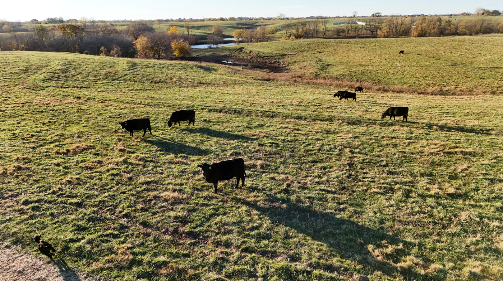

Field Notes
Latest Regenerative Farming Trends in Somerset
A plain-English look at how soil, grass, cattle and records can work together — and why measuring outcomes, not intentions, changes what good farming is worth.
Read the note